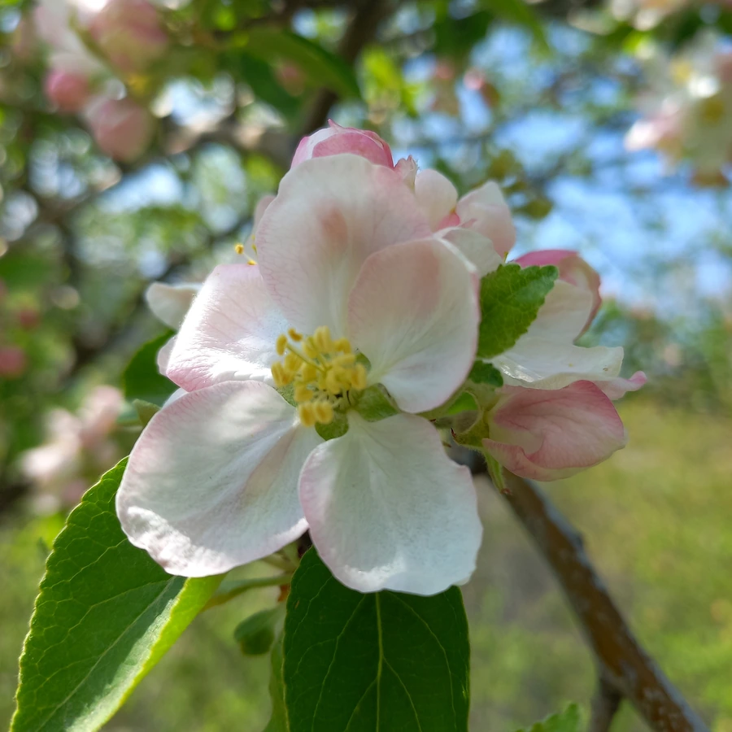

农作物与经济植物 · 植物界
苹果 Malus domestica

苹果是世界四大水果之一，果实脆甜多汁、耐储运，栽培品种数以千计，是温带地区最重要的果树之一。
- 分类
- 门被子植物门纲双子叶植物纲目蔷薇目科蔷薇科属苹果属
- 栖息环境
- 温带凉爽干燥的丘陵与平原，喜光照充足、昼夜温差大
- 地理分布
- 起源中亚天山，现主产于中国、美国、波兰、土耳其等地
- 保护级别
- 暂无评估（栽培果树）
物种志
苹果是蔷薇科落叶乔木，高可达 3–10 m，树皮灰褐色，小枝有茸毛。叶互生，椭圆形，边缘有锯齿，花与叶同时开放，花白色带粉，五瓣，伞房花序，香气淡雅。果实为梨果，球形，果皮颜色有红、黄、绿等，果肉脆或多汁，内有 5 室，含数粒褐色种子。不同品种的果形、色泽和风味差异很大。
现代栽培苹果主要源自中亚天山一带的塞威士苹果，驯化历史数千年，19 世纪以后欧美培育出大量品种，如今中国是世界上最大的苹果生产国。苹果喜温凉干燥、光照充足的气候，耐寒，适宜在土层深厚的沙壤土中栽培，多采用嫁接繁殖。果实富含膳食纤维、维生素 C 和果酸，可鲜食，也可加工成果汁、果酱和果酒；苹果花是重要的蜜源。中国陕西、山东、甘肃等地是主产区。
形态与习性
- 树高3–10 m，小枝有茸毛
- 花白色带粉，五瓣
- 果实梨果，内有 5 个果室
- 繁殖嫁接繁殖
- 主要用途鲜食、果汁与果酱
- 起源中亚天山一带
- 主产区中国陕西、山东、甘肃等地
趣味知识
- 苹果的“果核”其实是心皮发育成的 5 个果室，种子就藏在里面。
- 现代栽培苹果多源自中亚天山的塞威士苹果，经过数千年驯化。
- 苹果切开后变褐是果肉中的多酚氧化酶接触空气造成的。